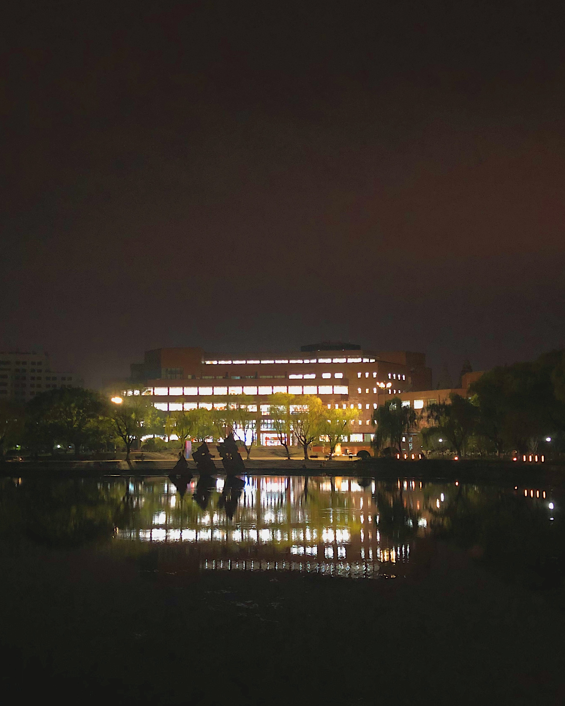
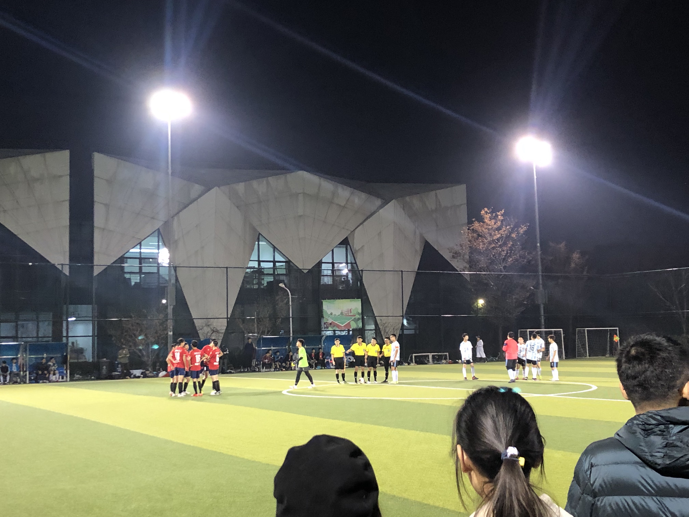
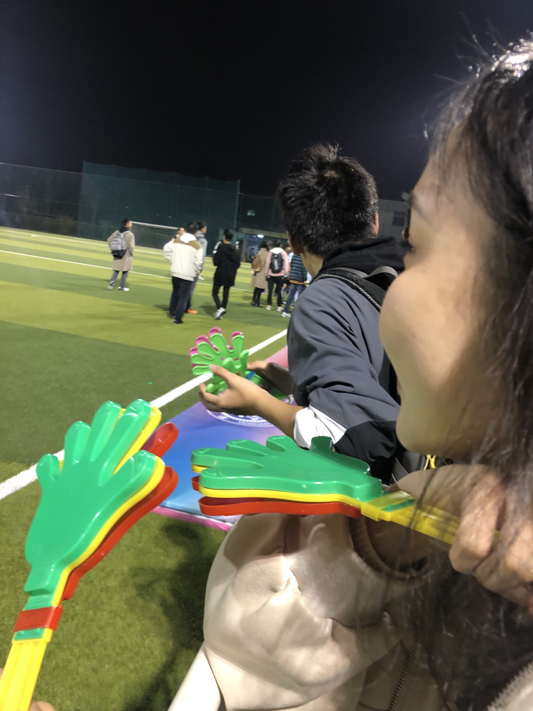
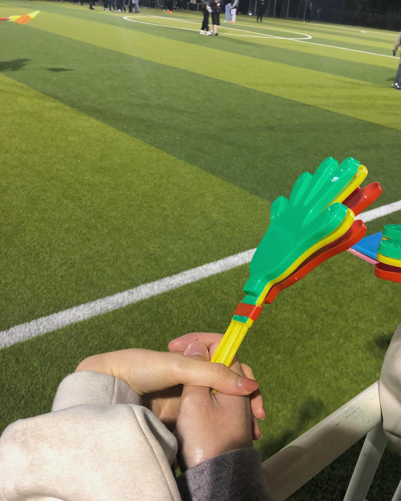

22-07-28
那天上午我在组织队内训练，下午看了一会儿希望杯甲级的比赛，晚上和她约好在我们学校东侧的莲花南路碰头。当她答应我要来我们学校玩的时候我还是很开心的，因为每次都是我去她的学校找她玩，她却从来没有见过我的学校。
为了一见面就抱抱她，我特意把自己洗得很香再出门，不过她似乎没有预料到我的动作，只是很不情愿地搂了我一下。那时候的她真的很羞涩，好像并不想被其他人知道我们在交往一样。我们趁机欣赏了一下我们学校的庙门和对面的华师大，然后增添了她对闵大荒的刻板印象。
她拿着我的手机顺利从东三门混进了我们学校，而我拿着校园卡和保安掰扯了半天他才放我这个良民进。看到她出现在我们学校给我有一种魔幻的感觉，因为我的确幻想过很多次她和我在学校一起散步的场景。天色逐渐暗下来，我牵着她的手，从东区横跨淡水河来到西区。因为校区很大，所以有一种匆匆赶路的感觉。我们穿过了漆黑的宣怀大道，看到从东中院陆续走出来的一批又一批学生，在二餐兜兜转转了半天，最后在麦当劳落脚。神奇的是，整个过程中并没有人打扰我们，似乎我和她都是不属于这里的一般。她问我在这里是不是交不到朋友，我说我的朋友都很爱学习不乱逛。不过我还是很庆幸没有遇到什么熟人，可能那时候的我也很羞涩吧。
虽然只有一个晚上，但是我们做了好多好多事情。我们在思源湖边散步，找了一个安静的位置坐下，我靠在她的肩上。我们抬头看到了月亮，她说思源湖真不错啊可以看到月亮——她当时在徐汇滨江也是这么说的，不由得让我怀疑她是不是被开发出来的强人工智能。之后的每一次造访思源湖，我都会想起她，想起她在这个位子说的这句话。在这之前我并没有意识到思源湖的特别之处，因为它除了这个名字之外实在是太普通了。不过现在它起码有个优点：可以看到月亮。
看到不远处的致远足球场散发出灯光，我意识到今晚是21级新生杯决赛。现在看来，和她在我们学校一起看一场足球比赛真是人生中最特别不过的事情之一。对阵双方是老牌强队电院和机动，学校里最大的两个学院。因为球场是笼式足球场，所以比赛的氛围特别好，我们又恰巧站在电院观众席这边。我很得意地和她说我在这个球场打进过1个漂亮的任意球，不过她似乎没有听明白，她对足球并没有什么浓厚的兴趣。
令人惊讶的是，机动竟然通过点球先下一城，而电院并占不到什么优势。更富有戏剧性的是，随着机动有一名球员红牌下场后，电院抓住机会在最后关头扳平了比分，进球的是一个穿阿迪的绿鞋小哥。小哥进完球时候向在观众席的漂亮妹妹献出了飞吻，我猜那应该是他女朋友吧？不出意外，在点球大战中绿鞋小哥又打进制胜球。散场庆祝的时候他们在球场上热情地拥抱在一起。不得不说真是一对令人羡慕的情侣啊，她要是也能看到我进球，比赛结束后和我拥抱，那该有多好。
我带她一路走到空无一人的上院，她被吓得半死；我又带她走到空无一人的东上院，她又被吓得半死。黑暗的楼道里闪烁着“安全出口”的绿光，时不时传来东西敲级的回声，教室里座椅在此时有序得令人惊悚。晚上的教学楼确实很恐怖，要是我一个人我也不敢乱逛。
我们牵着手走过了大半个学校，那时已经接近凌晨，晚于15号线的末班车时间。东区往往是没有人的，更别提在这个时候，但我却觉得东区从未如此温馨过：温暖的路灯，宽敞的大道，远处的华师大，以及身边的女孩。
回想这个晚上，我和她在麦当劳吃了安格斯牛堡，和她在玉兰苑点了一杯奶茶，和她在包玉刚图书馆门口的广场上欣赏喷泉和思源湖，和她坐在长椅上一起欣赏闵行的月亮，和她在教学楼里走来走去，和她看球赛，和她穿过通往学院的宣怀大道......我在交大一直都在做这些事情，不过每次都是孤独的。突然，当她参与进我的日常之时，一切都变的不可思议起来。
我们在凯旋门打车返程，结束了这场梦幻之旅。我想，当我再次踏入校园的时候，内心肯定会是空荡荡的吧
她说这个月亮很好看
这张很漂亮，包玉刚图书馆无敌
比赛即将开始，好紧张
偷拍她，笑得好憨憨
偷拍牵手，嘻嘻
评论区